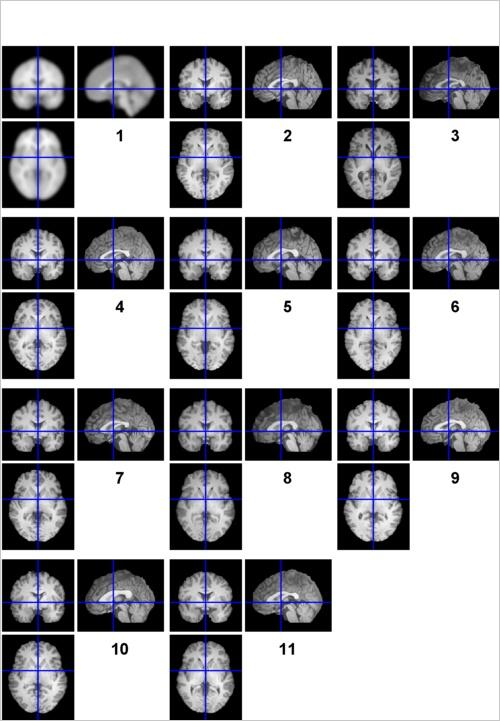
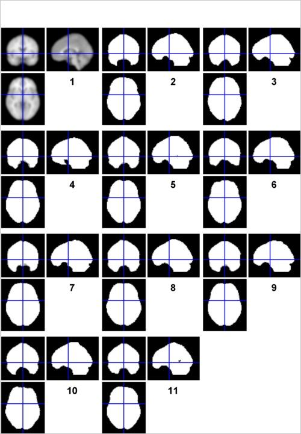
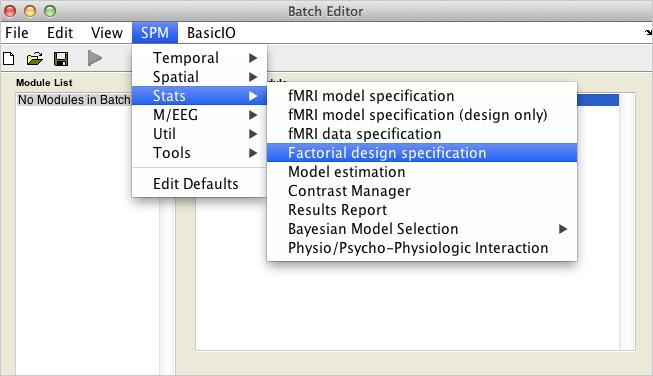
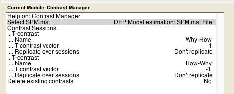
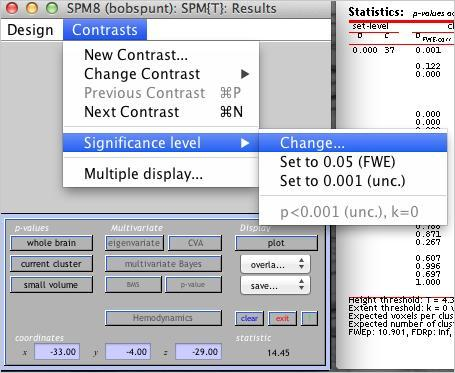
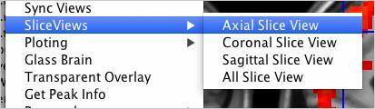
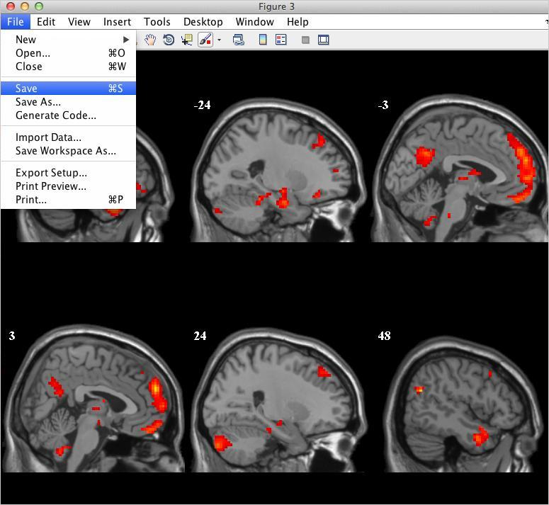
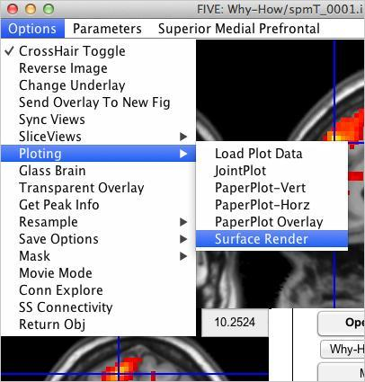
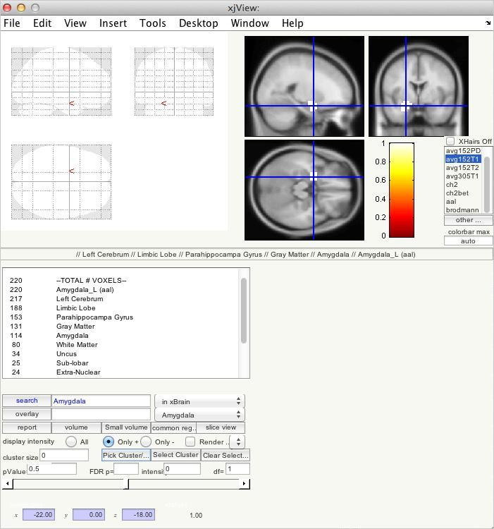
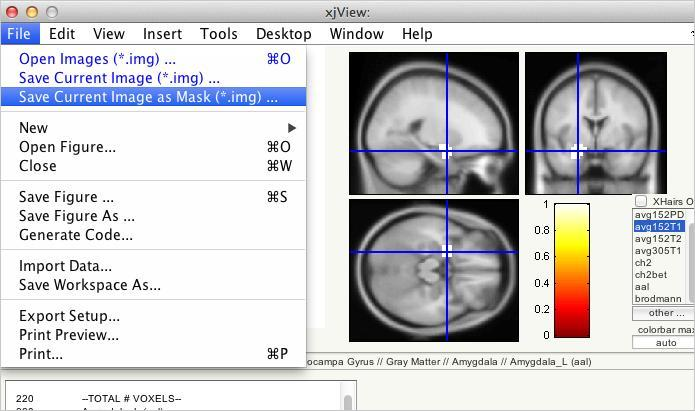

Group (Level 2) fMRI Data Analysis
Contents
Before Getting Started
Today's lab will require use of several 3rd-party extensions to SPM8 analysis in MATLAB. These should be available to you in the same folder you found the html document you are currently reading. Before you get started, add that folder - along with all of its subfolders - to your MATLAB search path. Once you are finished, check to make sure it worked by running the following in the MATLAB command window:
which spm
which files
which peak_nii
which FIVE
which xjview
Goals of the Lab
- Learn how to evaluate aspects of data quality that affect group analyses
- Learn how to run group analyses on the 10 subjects included in the course dataset
- Learn how to correct your results for multiple comparisons at both the voxel and cluster levels Learn how to visualize and explore your results
- Learn how to define regions of interest (ROI) and use them in a group analysis
The Chosen Ten
By now you will have estimated (at least) two distinct models of the fMRI timeseries for the subject you just happened to choose to examine during the first SPM lab on preprocessing. Now, briefly close your eyes and imagine that, magically, the same models were estimated for the remaining nine subjects in the dataset. Now, open your eyes and behold the precooked folder containing a normalized anatomical image (wanat_hires.nii) and folders for the two models estimated in the single-subject lab.

Checking Data Quality
There are at at least two questions you need to answer about your individual subject data before you begin a group analysis:
Is everyone in the same stereotaxic space? Use check reg in SPM to
Verify that all 10 sets of images are in the atlas space. Before you do that, note that for this lab there will be many instances in which you will have to select a set of 10 images from each one of The Chosen Ten. To learn how to DRAMATICALLY speed up the process of selecting multiple files, read thistutorialbefore moving on. (Seriously, it's mandatory.) Once you're ready, examine 10 wanat_hires.nii's and see how the anatomy lines up (if the orthogonal viewers are too small, view the first 5 and then the second 5 images). Are there any subjects who seem out of registration with the others?

Is anyone missing functional data?
For this, use check reg to compare the 10 "mask.img" file located in your single subject analysis folders. (Do this just for the 2x2 model, but know that it is generally good practice to do this for every model that you estimate.) SPM automatically generates these images to show the User (that's you!) which voxels were included in their analysis. This is called masking, in which only a subset of all voxels in the image are singled out for computation. When SPM decides which voxels to include and which to exclude (which it does by default), the masking is known as "implicit" since it happens without the User having to "explicitly" specify a mask. You can learn more about "implicit" versus "explicit" masking in the SPM manual, orhere. This is very important to know, for the following reason: By default, SPM will only include a voxel in your group analysis if and only if EVERY individual subject has data at that voxel. If 9/10 have it, it will be excluded. With that in mind, check out your group's mask images, playing close attention to ventral regions of the frontal and temporal lobe that are notoriously susceptible to signal distortion and signal loss. Are there any subjects who seem to have more signal loss than others?

Create a Mean Anatomical for the Group
Let's create an anatomical reference image using the ImCalc tool:

- Go to Options:Data Matrix. Click Yes-read images into data matrix. This will allow ImCalc to read all of the images you are about to specify into matrix X.
- Now go to Input Images and select the 10 wanat_hires.nii which are subjects? normalized anatomical images.
- In Output Filename type wanat_hires_mean.img. In Output Directory specify the directory into which you want the mean anatomical to be written. In Expression write mean(X). This expression will create an average of the anatomical images.
- Run the batch.
- Use the Check Reg utility to compare the mean anatomical to the template image. Does it look like the group is, on average, in good registration with the template?
Now take a quick look atthis tutorialto see how to do what you just did in less than 10 seconds using the function FILES and a second function you'll learn about called BSPM_IMCALC.
Group Analysis: One-Sample T-Test
Start by making an output folder for each of the analyses you plan on running. If I were you, I'd make a folder called "groupstats" in your data directory (use "mkdir groupstats" in the MATLAB command window to do this). Then, enter that folder with "cd groupstats" and make two additional folders called "2x2" and "Parametric". Finally, enter the 2x2 folder with "cd 2x2" and make folders called "Why-How" and "Face-Hand". These correspond to con_0001.img and con_0002.img in your individual subject folders (you'll use the precooked models, even for your own subject). Now, let's use the Batch Editor to specify and estimate a one-sample t-test on the first of these images:
- Open the Batch Editor
- Open a Stats:Factorial Design Specification module
- For Directory, select the analysis directory you created.
- Click on "Design" and observe that you can select from a variety of statistical models; the one we need, "One Sample t test", is already selected. Expand it, then for Scans, select the ten (10) con_0001 contrast images.
- Add an Estimation job using the Batch Editor (as we did yesterday). Specify a depencency with the SPM.mat created from the first job.
- Add a Contrast Manager job. Define two contrasts. First, "Why-How" requires a single contrast weight: +1. Then, "How-Why" requires the inverse: -1.
- Save this Job.
- Repeat the above for the Face-Hand contrast.
- Save that job, too.
- Load both jobs using "Load" from the Batch Editor menubar. The Module List should look like this:
- When you're ready, run the jobs. The spm figure window should look like this:





Examine Results in SPM
The time has come to peer inside the group mind of The Chosen Ten. Using the Results button in the SPM menu, load in the SPM.mat file for the 2x2 model and select the Why > How contrast for viewing. For now, threshold it with:
- Do not apply masking.
- Give it a really fancy-sounding title.
- P-value adjusment should be "none"
- Threshold should be left at .001
- Extent threshold at 0
Once you see the "glass brain", use the overlay menu (like yesterday) to use the mean anatomical as an underlay for the thresholded statistical map.

Use the "whole brain" option under p-values to produce a report showing the peaks wihtin each identified cluster of activity. Below, you can see this table. The circled part at the bottom (FWEc) shows the minimum extent (which we've so far been leaving at 0) required for a cluster to considered "significant" at a family-wise error rate of .05. This is one of the forms ofcluster-level correction for multiple comparisonsthat SPM offers.

To apply this correction, use the drop down menu to change the thresholding you're using, as shown below:

Enter all the same values except the last one, where it asks for the "extent threshold". Instead of entering "0", enter the value necessary for cluster-level correction. Does the resulting thresholding statistic map look less noisy to you?
Now, let's change the threshold again but this time apply a voxel (i.e., peak) level correction for multiple comparisons. To do this, use the change threshold procedure as above. When you get "P-value adjusment", choose the option for family-wise error (FWE). Then, stick with the default threshold of .05 (which in this case refers to the FWE corrected threshold), and do not apply an extent threshold (that is, leave the last input at 0). Did this change the number of "supra"threshold voxels?
At this point, this walkthrough challenges you to do the following:
- Use SPM to load the results for the Face > Hand contrast.
- Save a CSV file that reports those regions that survive an uncorrected voxel-wise threshold of .001 and a family-wise error corrected cluster-level threshold of .05.
Which regions survived? If you did things correctly, you should see bilateral activation in some no-name region of the brain that no one has every heard of. (Just in case it wasn't clear, that last sentence was meant to be ironic.) As shown below, SPM offers a number of different options for saving all or part of your results as image files. Given that we'll shortly be discussing region of interest analyses (ROIs), use the "Save current cluster" option shown below to save an image of just the right amygdala (for this, you'll need to have the crosshair positioned on a voxel in the cluster).

Use the Display utility to take a look at the "functional" ROI you've just created:

Visualization of Results in FIVE
ALLOW ME TO EXPLAIN








Region of Interest Analyses
You've already seen above how you can easily make functional ROIs from activation maps in SPM. In this tutorial, you'll see how to make ROIs based on the peak coordinates reported in previous neuroimaging studies.
Finally, the following illustrates how you can easily save anatomical ROIs in the SPM extension "xjview".



